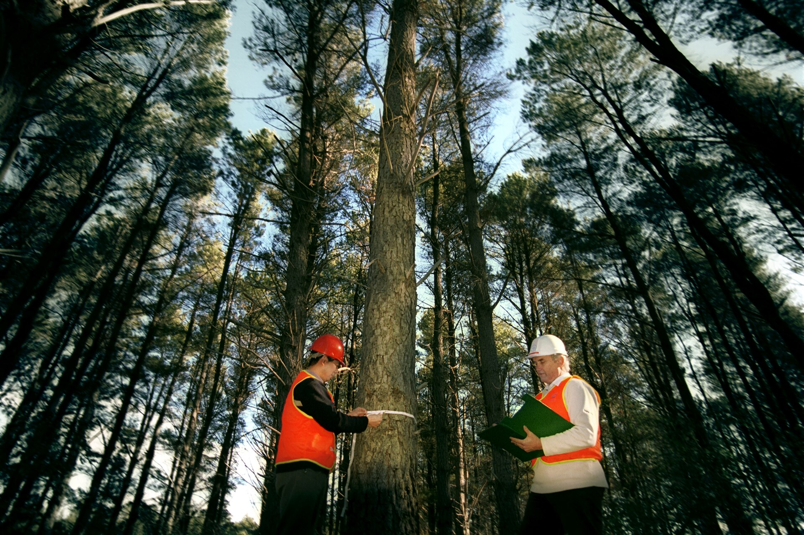

Forest Biomass
and Carbon Estimation
Connecting DBH, height, wood properties and stand expansion to forest carbon information.
Royal University of Bhutan
· source · uncertainty
Carbon estimation starts with good mensuration
Unit X
- Biomass pools and above-/below-ground components.
- Destructive, non-destructive, expansion-factor and root:shoot approaches.
- Species-specific versus generalized allometry.
- Why biomass, carbon stock and CO₂-equivalent differ.
- Individual-tree AGB from a documented equation.
- Plot biomass and biomass per hectare.
- Carbon with an explicit carbon fraction.
- CO₂-equivalent using 44/12.
- A transparent uncertainty statement for Practical 11.
An allometric result is an estimate from a model—not a direct weighing of the standing tree.
Introduction to forest biomass
Biomass is dry organic matter. Carbon is one chemical component of that biomass. CO₂-equivalent expresses the corresponding mass of carbon dioxide.
Biomass links tree size to ecosystem function
Unit X
The mass of living or dead organic material, normally reported as oven-dry mass for forest carbon work.
- Quantify forest carbon stocks and change.
- Compare restoration or management outcomes.
- Support greenhouse-gas reporting and carbon projects.
- Understand productivity, nutrient pools and disturbance effects.
- Connect field plots with landscape-scale remote estimates.
State whether biomass is fresh or dry, which pool is included, the area basis and the date.
Name the pool before you add the number
Unit X
Living stem wood, bark, branches and foliage above the soil. Some equations predict total tree AGB; others only a component—read the definition.
Living roots below ground. Routine inventories commonly estimate BGB from documented relationships rather than excavation.
Deadwood (standing/down), litter and soil organic carbon require their own sampling and conversion methods. Do not infer them automatically from live-tree AGB.
Biomass ≠ carbon ≠ CO₂-equivalent
Unit X
Wood, bark, branches, leaves and/or roots according to the stated pool.
CF is the carbon fraction of dry matter. It depends on source, tissue/species and tier; 0.47 is a documented default/use in Bhutan’s Second NFI.
Mass of CO₂ containing the same mass of carbon; it is not additional carbon stored in the tree.
This numerical chain uses CF = 0.47 as an example documented by IPCC defaults and Bhutan’s Second NFI; it is not a universal carbon fraction for every species and tissue.
Methods of biomass estimation
Direct harvest measurements build models. Routine inventories usually apply validated non-destructive relationships to DBH, height, wood density or volume.
Weigh directly—or predict from measurable dimensions
Unit X
- Select representative trees under an approved study design.
- Fell and separate stem, branches, foliage and other components.
- Weigh fresh mass; take subsamples.
- Oven-dry subsamples to determine dry-matter ratio.
- Estimate component and total dry biomass.
Strength: direct calibration data. Limits: destructive, expensive, hazardous, legally/ethically constrained and unsuitable for routine inventory.
- Measure DBH and, where required, height/species.
- Obtain appropriate wood density or volume information.
- Select a compatible published or locally validated equation.
- Apply it within its definition and calibration range.
- Expand tree/plot estimates and quantify uncertainty.
Strength: repeatable without felling. Limits: model and input uncertainty; errors can scale across many hectares.
Every factor needs a definition and source
Unit X
Converts a measured wood-volume or stem-biomass component to a broader biomass component. Definitions differ: BEF may apply to volume, stem biomass or growth.
Oven-dry mass divided by green volume, often in g cm⁻³ (numerically equal to Mg m⁻³). Use species/site values from a credible database or study and document how unknown species are handled.
Do not confuse basic wood density with air-dry lumber density.
Some documented methods use a biomass-class-specific ratio:
R varies by vegetation and biomass class. This teaching form is not Bhutan’s Second NFI calculation.
Bhutan Second NFI: after expressing plot AGB as t/ha, BGB was estimated at plot—not individual-tree—level using BGBp = 0.489 × AGBp0.89.
Allometric equations
Empirical relationships that predict a difficult quantity—biomass—from measurable tree attributes such as DBH, height and wood density.
Allometry turns structure into a modelled mass
Unit X
Built for one species or species group. Potentially closer fit when your population, size range and conditions match the calibration data.
Built from many species/sites using predictors such as DBH, height and wood density. Useful where local equations are absent, but compatibility still requires scrutiny.
The longest equation is not automatically the best. Prefer the most appropriate, transparent, validated equation with inputs you can measure well.
Compatibility before calculation
Unit X
AGB or stem? Whole tree or merchantable? Dry kg or tonnes?
Species/group, forest type, region and management conditions.
DBH and height within calibration; avoid unsupported extrapolation.
Correct definitions, reference height, units and wood density basis.
Sample size, component measurements, model form and fit diagnostics.
Independent or local comparison where possible.
Equation residuals, parameter error and input error.
Full citation, equation, version, units and any correction factor.
Keep the Bhutan sources distinct: the repository’s 2018 publication documents 14 species-specific and two general equations. The Second NFI Volume II reports that 35 species-specific and two general equations were available and used in its national analysis. Use only a fully documented equation that is actually available for the task; never reconstruct one from an isolated coefficient.
A generalized tropical-tree teaching example
Unit X
- AGB = oven-dry above-ground biomass, kg
- D = DBH, cm
- H = total height, m
- ρ = basic wood density, g cm⁻³
Hypothetical broadleaved tree: D = 30.0 cm, H = 20.0 m, ρ = 0.60 g cm⁻³. The density is an assumed teaching value, not a species claim.
Interpretation: predicted dry AGB for this tree under the model—not measured mass and not automatically valid for every Bhutan forest.
A Bhutan Pinus wallichiana DBH-only model
Unit X
AGB in kg; ba = π(D/100)²/4 in m²; D in cm. Calibration range in the source: 2.6–95.8 cm DBH, n = 52.
x = ba · t₁ = 0.00309 · t₂ = 0.098407 · t₃ = 0.394911
The spline term is part of the published equation. Omitting it, changing knots or mixing basal-area units produces a different—and invalid—model.
Three measured pines, one documented model
Unit X
| Tree | Species | DBH (cm) | ba (m²) | X₂ | Predicted AGB (kg) |
|---|---|---|---|---|---|
| P01-T01 | Pinus wallichiana | 28.4 | 0.063347 | 0.000218788 | 228.72 |
| P01-T02 | Pinus wallichiana | 34.7 | 0.094569 | 0.000765534 | 366.53 |
| P01-T08 | Pinus wallichiana | 38.1 | 0.114009 | 0.00136459 | 466.66 |
| Pine subset plot AGB | 1,061.91 kg | ||||
This is only the three P. wallichiana trees. It is not total plot biomass. The other five trees require compatible species-specific or justified generalized equations, each with documented inputs and ranges.
Uncertainty enters at every arrow
Unit X
DBH bias is amplified because many models use D² or a similar power. Height and species errors also propagate.
Residual variation, coefficient uncertainty, calibration population and unsupported extrapolation.
Plot sampling error, unequal areas, missing trees, non-response and incorrect expansion.
State inputs, equation source, range checks, pools, factor sources, sample design and which uncertainties were—and were not—quantified. More decimals do not reduce uncertainty.
Forest carbon estimation
Keep tree, plot and hectare stages visible; convert only the biomass pool you actually estimated.
One transparent chain, seven named steps
Unit X
A linear factor can commute with summation; a nonlinear relationship generally cannot. Bhutan’s Second NFI BGB equation therefore follows plot AGB expressed in t/ha.
AGB, BGB, deadwood, litter and soil organic carbon require explicit boundaries. Total carbon is a sum only after compatible estimates exist.
Why CO₂/C equals 44/12
Unit X
Bhutan’s Second NFI used CF = 0.47, noting a Bhutan study range close to the IPCC default. Other projects may use tissue/species-specific or updated national values.
One mole of CO₂ contains one mole of carbon: carbon atomic mass 12; two oxygen atoms add 32.
The 36.59 t CO₂e/ha is the CO₂ mass corresponding to the pine-subset carbon stock—not an annual sequestration rate and not the total forest carbon stock.
Choose the equation; see every intermediate term
Unit X
CF = 0.47 is prefilled because Bhutan’s Second NFI documents it. The optional linear R is retained only to demonstrate a generic sourced method; use the next calculator for Bhutan’s Second NFI plot-level BGB calculation.
Sum plot AGB first—then estimate roots
Unit X
- AGBp = plot above-ground biomass expressed in t/ha
- BGBp = plot below-ground biomass in t/ha
- Apply after summing and expanding plot AGB—not to each tree
- Source: DoFPS (2023), Second NFI Volume II, equation 2.8; Mokany et al. (2006)
Pine-subset example: AGBp = 21.2328 t/ha gives BGBp = 0.489 × 21.23280.89 = 7.4190 t/ha. This remains a subset, not total plot biomass.
Carbon numbers serve specific decisions
Unit X
Track forest carbon stocks and changes associated with deforestation, degradation, conservation and enhancement. Field measurement supports reference and monitoring systems.
Compare biomass accumulation, stand treatments, species mixtures and disturbance recovery while also considering biodiversity and livelihoods.
Forest inventories, activity data, growth/removals and documented factors support greenhouse-gas estimates at appropriate IPCC tiers.
Require a defined boundary, baseline, monitoring design, leakage/permanence considerations and verified methods beyond one classroom calculation.
Repeated plots and remote sensing can detect change in canopy and stocks, but small removals or understory change may be difficult to observe remotely.
Carbon is one forest value. A management recommendation should also consider biodiversity, timber, soil/water, hazards, community use and measurement uncertainty.
From equation choice to uncertainty statement
Unit X
- Define biomass pool and output unit.
- Select an appropriate equation; cite source.
- List required variables, units and calibration range.
- Check DBH, height, species and wood-density data.
- Estimate each tree’s AGB.
- Sum plot AGB; convert kg to tonnes.
- Apply fixed-area hectare expansion.
- Estimate BGB with the governing sourced method and at its stated level; for the Bhutan Second NFI mode, apply equation 2.8 to plot AGB in t/ha.
- Convert included biomass to carbon with explicit CF.
- Convert C to CO₂e where appropriate.
- Compare species/pools and identify large contributors.
- State assumptions and excluded pools.
- Discuss measurement, model, sampling and conversion uncertainty.
- Explain what the result can—and cannot—support.
Begin with the Unit VIII plot. Use the Bhutan equation for the three P. wallichiana trees; choose documented compatible equations for other species or report a pine-subset result only.
Can you audit the units and assumptions?
Unit X
- DBH entered in metres when equation expects cm.
- Fresh mass treated as oven-dry biomass.
- Stem biomass labeled whole-tree AGB.
- Wood density or BEF from an incompatible source.
- Equation used beyond species/size range.
- Plot kg reported as t/ha without conversions.
- Plot-level BGB equation applied to individual trees.
- 0.47 treated as universal truth.
- Carbon multiplied by 44/12 and then called carbon again.
A carbon estimate is a documented model result
Unit X
- UWICER & FRMD (2018). Allometric Biomass Equations: 14 Species and 2 General.
- DoFPS (2023). Second NFI, Volume II: State of Forest Carbon Report. Equation 2.8 and the 35-species-specific + two-general equation set used nationally.
- IPCC (2006). Guidelines for National GHG Inventories, Volume 4: AFOLU, especially Chapter 4.
- Chave et al. (2014). Improved allometric models to estimate aboveground biomass of tropical trees. Global Change Biology 20:3177–3190. doi:10.1111/gcb.12629.
- Mokany, Raison & Prokushkin (2006). Critical analysis of root:shoot ratios in terrestrial biomes. Global Change Biology 12:84–96.
- Define the biomass pool and dry-mass unit.
- Select equations for species, region, variables and calibration range.
- Keep tree → plot → hectare expansion visible.
- Apply BGB methods and CF at their documented level and conditions.
- Report measurement, model, sampling and conversion uncertainty.
Next: Unit XI shows how field plots train and validate satellite, UAV and LiDAR estimates across space and time.